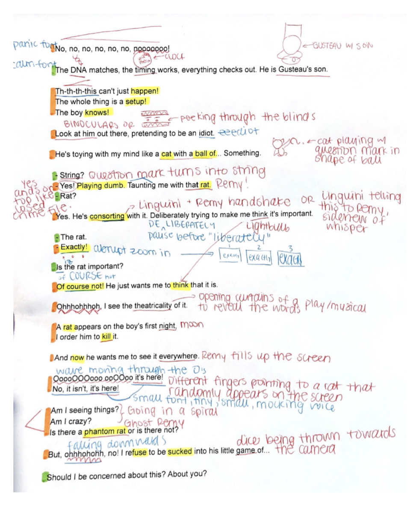
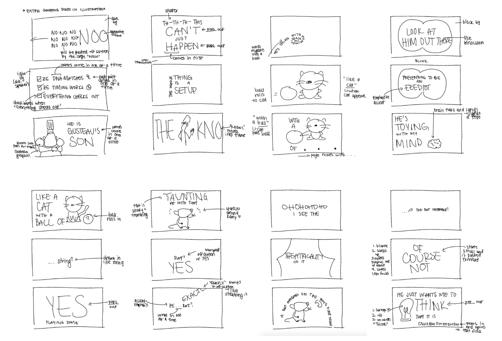
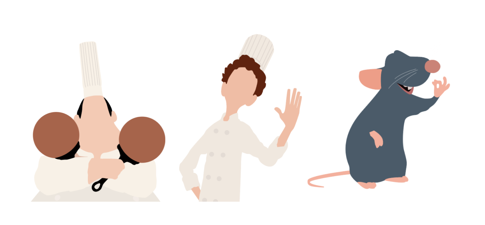

I used motion graphics to create screensavers and logo animations that would be displayed on screens at events during Vancouver Startup Week 2023. I was given the brand guide, but had creative freedom with the animations which were executed in Adobe After Effects.
In the beginning, I sketched my ideas for how I would want the elements to move. I then presented these ideas to the art director who revised them alongside me before I moved my ideas into After Effects. I then brought the brand elements into After Effects and started animating. Before my motion graphics could be finalized, I had to get it approved by the art director, EDI (equity, diversity, inclusivity) coordinator, and the chairs.
Firstly, the branding had to be tweaked. At Vancouver Startup Week, we strive for drive, inclusion, excellence, and community which the art director and co-chairs did not think was best communicated through the first draft of the animations. I took that into account and went back to the drawing board where I ideated different movements/animations for each visual element of the brand.
I then finalized the movements of each of the brand's elements.
Once those were finalized, I created different assets using the motion graphics such as screensavers.
Communication is key to successful collaboration. During this project, the art director and I had several discussions where we shared ideas and gave each other feedback regarding how we would convey the VSW branding through animations. We were able to critique fine details and also view the project on a wider scope. I learned how to better articulate my creative ideas to other people. In the future, I would gain more feedback from the VSW attendees. The attendees are the main participant group that would be interacting with the motion graphics, but we did not have enough time to gain their feedback on the designs. All the revisions were based on critiques from people within VSW, but gaining an outside perspective could have helped.
I created a kinetic typography video utilizing motion graphics design for a short scene from the movie 'Ratatouille'. I aimed to enhance the scene's musicality and nuances in the script through motion and text to create an immersive experience for the viewer. This was made for a Digital Image Design class.
To plan the imagery for the video, I first annotated a transcript of the scene. In red, I underlined words and phrases where I could picture strong images and noted specific words to emphasize in the animation and potential illustrative assets I would need.
After the initial read-through, I sketched storyboards on Procreate inspired by my ideas in the annotations.
I also designed flat designs of the characters of ‘Ratatouille’ in Adobe Illustrator to complement the text.
I then used Adobe After Effects and Adobe Premiere Pro to animate the kinetic typography video. Having no experience with After Effects prior to the project, the learning curve was steep. However, I taught the program to myself outside of class through LinkedIn Learning and YouTube tutorials. Here is the final kinetic typography project based on a scene from the movie, 'Ratatouille'.
The planning stage is the most important stage. While animating in After Effects, I was grateful that I was able to go through the planning stage to work on the details of the project, solidify a structure, and establish a clear plan of execution moving forward. If I were to go into After Effects without a plan, it would be hard to execute and improvise a high-quality animation. By going through the drafting, feedback, and revision process, I was able to form a solid structure before moving my ideas to high-fidelity animation. In the future, I would challenge myself to solely use text in the video instead of partially relying on illustrations of the characters to make the video more exciting. I think solely using text would better highlight the nuances in the script.